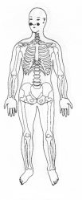

Trava de Segurança da Energia 21 - Terceira Profundidade.
|

|
TSE 21
Colocar a mão sobre base do osso malar correspondente no rosto TSE 21. ou
. M.e. sobre o braço direito parte superior TSE 19 alta; ®
M.d. na coxa esquerda parte interna TSE 1 alta . ® |
|
Notas:1 - M.d. = mão direita M.e. = mão esquerda.2 - O texto sublinhado indica que pode ser feito usando alternadamente o lado direito (mão direita) e depois o lado esquerdo (mão esquerda). 3 - Tocar a área indicada, com a ponta dos dedos da mão, durante alguns minutos ou até sentir uma pulsação rítmica. Não precisamos nos preocupar em demasia com a precisão da área indicada, pois cada trava de segurança da energia tem uma abragência de uns sete centímetros em torno de si.